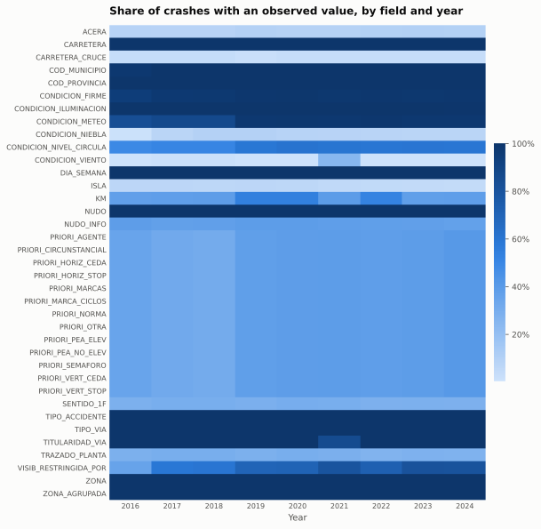

Data and checks
Where the numbers come from, how they are defined, and the checks that tie them to DGT's published totals.
Sources
- Crash microdata 2016–2024: one row per injury crash, 875,013 rows, from DGT en Cifras (Registro Nacional de Víctimas de Accidentes de Tráfico). Location, time, road type, crash type, victim counts (including deaths by road-user type) and conditions, plus the number of vehicles; no per-driver or per-vehicle records and no coordinates. The 2024 file was last updated by the publisher on 5 November 2025.
- Historical series 1993–2024: the Anuario de Accidentes 2024 series workbook, used for the long-run trends and as the reference for reconciliation.
- Statistical tables 2014–2024: province, month and involvement tables for 2024; vehicles involved and victims by means of transport for 2020–2024; driver victims, drivers involved by age, sex and vehicle type, and drivers by recorded infraction (tables 6.1) for every year (chapter workbooks up to 2019, one workbook per year from 2020).
- Driver census 2014–2025: licence holders by age band and sex from the published class-by-age tables (2014–2023) and the province-by-age text files (2024–2025).
- ITV kilometre estimates 2022: DGT's circulating fleet (its parque circulante) and mean annual km by vehicle type and age, modelled from annualised odometer readings at roadworthiness inspections; valid for aggregates only.
- DGT speed-factor report (Observatorio Nacional de Seguridad Vial, March 2025): 61 of its 64 tables transcribed from the PDF, 2014–2023, for Spain without Cataluña and País Vasco; never added to the yearbook figures.
- INE resident population (Estadística Continua de Población, table 56947): province by five-year age group and sex, 1 January and 1 July, 2002–2025.
- Driving activity: ESRA 2018 and 2023 national shares of adults who drive (Spain), from the ESRA3 main report and the ESRA-123 dashboard; MOVILIA 2006 (Ministerio de Transportes) trips by mode, sex and age. No Spanish source gives the share of people who drive by age.
Reuse
The code that builds this site is released under the MIT licence. The data are not covered by it: each provider's terms apply to its files, and the register in the repository lists them with their URLs. DGT's crash microdata are catalogued on datos.gob.es under its legal notice, and DGT's other statistics, which carry no reuse licence of their own, are treated here as public-sector information under Ley 37/2007 and reused under the same conditions: the source is named, the meaning is not distorted, the dates are kept, the metadata on the update date and the reuse conditions are preserved and no endorsement is implied. INE population is under Creative Commons Attribution 4.0 (own elaboration with data extracted from www.ine.es). The MOVILIA workbooks of the Ministerio de Transportes may be reused for commercial and non-commercial purposes provided the source and the date of last update are named, the content is not distorted, the metadata are preserved and no endorsement is implied; the five Comunidad de Madrid MOVILIA tables may not be used directly for commercial purposes; the ESRA reports offer no reuse licence, so they are cited and not redistributed. Every figure here is an aggregate, quoted with attribution, and never combined with anything that could identify a person.
Definitions
- Injury crash: at least one person killed or injured.
- Death: within 30 days of the crash (DGT's consolidated definition). Where a 24-hour count is used, the chart says so.
- Hospitalised: admitted for more than 24 hours.
- Zone: interurban roads versus urban streets and crossings, as DGT groups them.
- Rates: counts are treated as Poisson with a known denominator; intervals are exact 95% intervals. Residents are INE's estimate on 1 July of the year; licence holders are DGT's census for that year, which DGT publishes without a reference date (people holding a driving permit or a moped or agricultural licence). Drivers with unknown age (about 3% of those involved, 0.4% of those killed) are excluded from the age-band rates.
- Interrupted time series (policy page): Poisson regressions of monthly deaths on a linear trend, month-of-year terms and a level (and slope) change at the intervention, with Newey–West standard errors (12 lags); the 2019 design adds a control group of roads and estimates the treated group's change relative to the control (the post × treated interaction).
Reconciliation checks
| What is checked | Checks | Passed |
|---|---|---|
| The 2025 driver-census extract is within 0.5% of the published province table, nationally and province by province (exact today) | 53 | 53 |
| The 2023 driver census by age (text file) is within 2% of the published age table, band by band | 15 | 15 |
| Every code in the 33 coded fields is in the DGT dictionary or a documented missing state | 33 | 33 |
| Driver deaths in the yearly tables 4.1.1 equal the yearbook series, every year 2014–2024 and zone | 33 | 33 |
| Crashes per year equal the yearbook total | 9 | 9 |
| 2024 crashes and deaths per province equal statistical table 1.1 | 104 | 104 |
| Deaths by means of transport in the yearly tables 2.2 equal the microdata death columns for every vehicle group, 2020–2024 | 60 | 60 |
| Vehicles involved in the yearly tables 2.3 are within 0.1% of the microdata vehicle count, 2020–2024 | 5 | 5 |
| 2024 crashes and deaths per month equal statistical table 3.1 | 24 | 24 |
| The blocks of the driver-infraction tables 6.1 that publish a total agree with each other, the expected number of them is present (two in 2014–2015, six from 2016), and the total is within 1.5% of the drivers involved in table 4.2, every year 2014–2024 and zone | 44 | 44 |
| Crash identifiers are unique within each year | 9 | 9 |
| Deaths, hospitalised, non-hospitalised and total victims per year equal the yearbook at 30 days, and deaths equal the 24-hour series | 45 | 45 |
What is missing

Empty, "not specified" (999), "not applicable" (998) and explicit unknown codes are kept apart in every table. Two quirks found by the checks: the island field carries an undocumented code 0 from 2018 on, treated as "not specified"; and the strong-wind flag is set in between 0.2% and 1.2% of crashes every year except 2021, where it is set in 24.6%, so it is excluded from comparisons. Three further breaks are in the coding itself rather than in its missingness. In 2024 Barcelona begins coding most of its streets as road type "other", so the share of crashes on an "other" road jumps (83% of the 2024 "other" crashes are urban streets) and road-type series are read year by year, road type and zone together. In 2021 most crashes on double-carriageway conventional roads are recoded as single-carriageway conventional; the policy page's two-group design keeps both codes in one group, but the severity model's road grouping puts them in different levels, so its dual carriageway and conventional levels pool the two regimes. From 2023 the junction field records more crashes at a junction (44% against 39%), mostly in Barcelona, and its detail field is no longer empty exactly when the crash is not at a junction. The full list is in the data inventory in the repository.
Reproduce
Everything on this site is generated by Python scripts in the repository, run from its root in this order. Times are for a laptop-class machine.
python scripts/ingest.py all: reads every raw file into Parquet, transcribes the speed report and runs the reconciliation checks (about six minutes, most of it the nine microdata workbooks).python scripts/build_tables.py: adds the derived fields and English labels to the crash table (seconds).python scripts/model.py: fits the two severity models and their checks (about half a minute).python scripts/analyse.py all: writes every result table and figure, including the rates, the interrupted time series and the speed summaries (under a minute).python scripts/build_site.py: renders these pages from the committed tables and figures (seconds). The GitHub Pages workflow runs only this step, so the site never depends on a rebuild of the data.
pytest runs the data-contract and code tests; the reconciliation checks above are among them.
The questions, the choice of sources, the statistical design and the reading of the results are the author's, as is responsibility for what is published: the denominators, the intervals and the model specifications are set out in the methodology note, the sources and their reuse terms above, and the limits beside each result. Every number is regenerated from the raw files by the sequence above, which anyone can rerun. The code and the prose were written with the help of AI coding assistants.